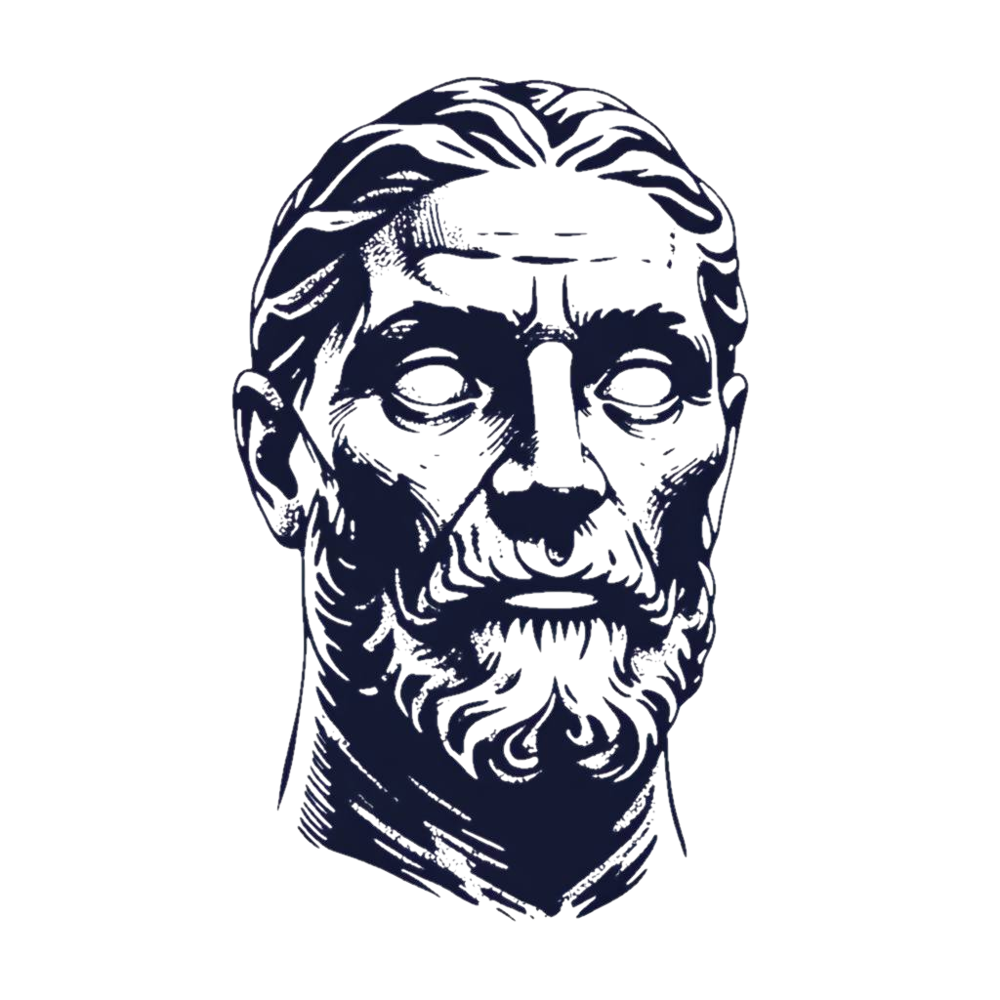

Simple. Modern. Human.

Mirid was built as a simple tool for downloading, running and talking to an LLM on your computer. It aims to lower the barrier for Windows users to explore AI for themselves, with less setup and more control over where their conversations go.
It grew out of my personal AI workstation Eloquent and contains approximately six months of unpublished development work. Mirid brings together open-source text and multimodal AI projects built by dedicated and highly talented developers—too many to thank individually.
The current Mirid build is for Windows 10 and 11 and supports NVIDIA or AMD GPUs as well as CPU-only systems. Linux and macOS builds are planned.
You can try Mirid yourself by downloading it here: